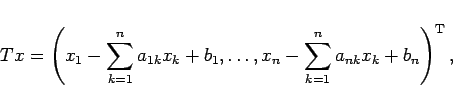
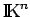

Inhalt Index DeskTop Bronstein

 Funktionalanalysis Metrische Räume Vollständige metrische Räume Einige Anwendungen des Kontraktionsprinzips
Funktionalanalysis Metrische Räume Vollständige metrische Räume Einige Anwendungen des Kontraktionsprinzips


Das gegebene lineare (n,n)-Gleichungssystem
geht durch Umformung (s. Lineare Gleichungssysteme) gemäß (19.26)in das äquivalente Gleichungssystem
| (12.62b) |
über. Dieses läßt sich mit dem Operator , definiert durch
|  | (12.63) |
in das Fixpunktproblem
| x = Tx | (12.64) |
kleiner als 1, dann erweist sich T als kontrahierender Operator und besitzt genau einen Fixpunkt (s. BANACHscher Fixpunktsatz), der der komponentenweise Grenzwert der Iterationsfolge mit beliebigem Startpunkt aus  ist.